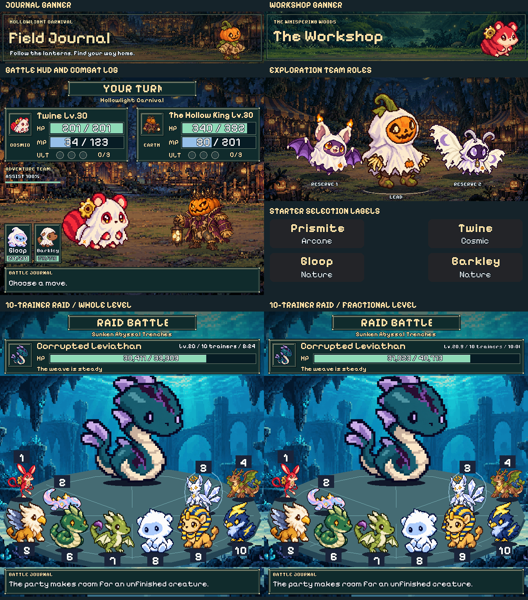

ChibiBeasts image typography
Pixelify Sans lettering across six production image surfaces: warm manilla headings, white values and body text, and a dark pixel outline. The sheet keeps every text sample at its native pixels. Starter artwork is cropped to its label rows here; the complete image is linked below.
The ten-trainer raids include a whole level and the actual fractional budget from five level20 and five level21 parties. Both show the complete boss name, trainer count and timer.

Open a source image for its full-size view:
- Journal banner
- Workshop banner
- Battle HUD and combat log
- Exploration team roles
- Starter selection labels
- Ten-trainer raid
- Ten-trainer raid · fractional level


Native Discord text and browser interface fonts retain their existing styling.